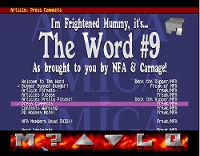
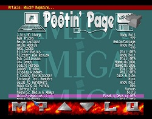
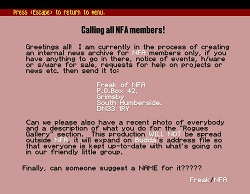
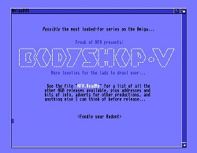

Interview with Dick Dolby (Freak/NFA)

FuZioN: Hi Dick, please introduce yourself.
Dick: I was one of NFA’s more productive members and apparently Co-Manager which surprised the hell outta me. I don’t even remember how I got into the group save that Deck the Ripper would sometimes ring me up to talk about stuff.
I was unemployed for the most part, having junked a crappy office job which gave me plenty of time to tinker with AMOS and then Blitz. I moved about a bit and made a few friends at a computer club in Scunthorpe as well as churning out the PD and jiffy trading. I even cracked a game once – someone actually posted me the original.
These days I run a couple of websites as well as doing web work for other people. As long as I don’t want to spend too much it’s an easy life.
FuZioN: How and when did you find the Amiga scene?
Dick: Probably via the small ads in the back of Amiga Format, where various dodgy geezers (Deck the Ripper, I'm looking at you) would advertise for contacts. I remember getting one Elite contact who was obviously visiting a board somewhere, and suddenly I became a hot trader for everyone below me. Eventually Deck dragged me into NFA and I pretty much stayed there.
FuZioN: Name your first prominent memory from the Amiga scene.
Dick: The very first one I saw that wasn't in a shop somewhere. My friend K, who I've known since school, got a 1.2 A500 and I was blown away by stuff like Battlechess. I think at the time I still had a C64, and I know K sold his C64 setup to finance the move to the Amiga.
FuZioN: Were you a member of any other groups than NFA?
Dick: I think we tried to start something called 'Network 12' for all Amiga 1200 owners - packdisks with AGA utilities on them, stuff like that. It failed.
FuZioN: What inspired you to create THE WORD diskmag, even though there were an abundance of diskmags already out there?
Dick: Originally it was meant to be an internal NFA production, but someone leaked it, shoddy interface and all, and suddenly people were asking for the next issue. #1 and (I think) #2 were absolutely dire, I remember that much.
That's probably why you can't find them anymore (see www.nfa.org.uk). The interfaces were incredibly basic because, after all, who'd see them?
FuZioN: Apart from THE WORD, name some of your favourite projects that you produced with NFA
Dick: Balls! was a good one, not least because it made me some money, but the one people remember most was the Bodyshop AGA slideshows - a collection of nice booby pics on a disk or two in slideshow format.
Apparently even FAST said they liked them, while they were in the process of raiding some of NFA.
FuZioN: Name some of your favourite demoscene productions/groups.
Dick: Sanity, Silents and Scoopex all released outstanding stuff. The Sanity "World of Commodore" demo was my all time favourite, I think. Melon were (and still are) kings of style - there was nothing quite like their stuff. Makes you wonder what they were smoking.
There were a couple of apps that were absolutely amazing for the time: zGif was a GIF shower that was about 8k in size and incredibly fast, and Stonecracker was a compression algorithm that could decrunch over itself, saving loads of memory. I think I employed both of those on The Word eventually.
FuZioN: The Word was coded using good old AMOS. In three words, how would you sum up AMOS?
Dick: Easy. Clunky. Hackable.
FuZioN: Are you still in contact with any ex-NFA members or scene pals?
Dick: Phil!98, Bootblock, Aladdin Sane and Daniel Thornton are still in my ever-decreasing circle. K did a Word article on a Phoebe Cates fake image that got into print and he still comes over regularly, but that's about it.
More recently I spotted Budda/NFA on Twitter and got back in touch there.
FuZioN: Did you regularly frequent any BBSes? If so, which ones?
Dick: I was never into that part of it. I think I uploaded an issue of The Word to The Big Hard One, but that's about it.
FuZioN: Are you still running any classic Amigas? If so, what models?
Dick: This last year (2013) I’ve spent some of my disposable income on an A1200 which needs a lot of attention. It came with 8MB in the trapdoor and a butchered-in 3.5in HD. It’s really a matter of finding time to play with it, though.
FuZioN: Were you a regular disk swapper and if so, name (and shame) your favourite contacts?
Dick: I was, but I’ll be damned if I can remember anyone in particular.
FuZioN: Do you follow the PC demoscene at all?
Dick: I’m not as busy working as I used to be but I still haven’t looked into that. I’m more likely to just hit up YouTube and look for demo videos rather than download and run them myself.
FuZioN: You've created a site dedicated to NFA. Does this mean you regularly get nostalgic?
Dick: I’m hankering for the gold old days :)
FuZioN: What inspired you to create the NFA shrine?
Dick: Literally, the domain was up for sale and it seemed like a good idea at the time. I still need to track down a few more titles though.
FuZioN: What exactly does NFA stand for?
Dick: National Fireplace Association! Haha.. try this one instead :) : http://www.nfa.org.uk
FuZioN: What is your day job?
Dick: I’m a Web Developer. Aside from client work I run a few websites that use either Google AdSense or affiliate marketing to earn an income. It pays enough that I don’t have to depend on finding new clients all the time so I’m thankful for that.
FuZioN: How do you relax/unwind/chill the hell out?
Dick: I like to go camping and have hiked up Ben Nevis a couple of times. Sometimes I’ll just throw the tiny popup tent up in the back garden and sleep outside just for the hell of it.
I also do a lot of reading depending on what interests me at the time. I went through a lot of books on North Korea last year and have recently been catching up with Iain M. Banks’ – especially the Culture novels.
UK TV is a bit dire these days and I really don’t watch a lot of that. I spend more time watching Japanese and South Korean shows via the Internet – SBS’s Running Man is a firm favourite. I also (finally!) signed up to NetFlix so there’s that.
FuZioN: What music are you into?
Dick: Dub FX, Dub Mafia, Billy ze Kick.
FuZioN: This is your spam area.. feel free to advertise any web presence, be it Fbook/Twatter/URL/other.
Dick: Visit my website, you damned dirty apes! www.dickdolby.co.uk
FuZioN: Thanks for taking part in the interview mate. Any final words of wisdom?
Dick: Remember:
- Never waste food or money.
- Never mess with someone else's car, money or wife.
- Women are never satisfied. Men can put up with anything.